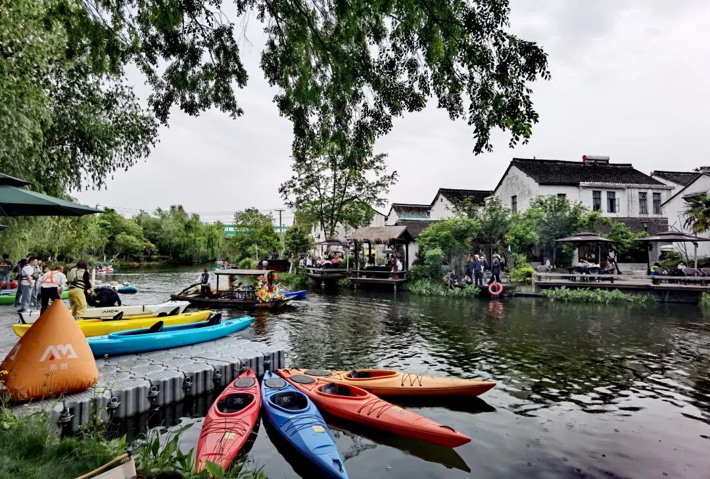
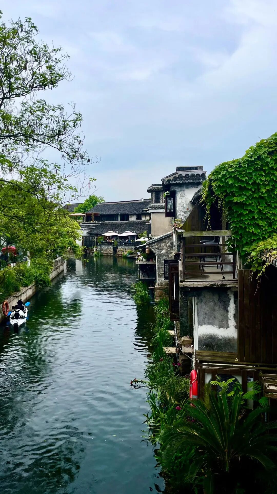
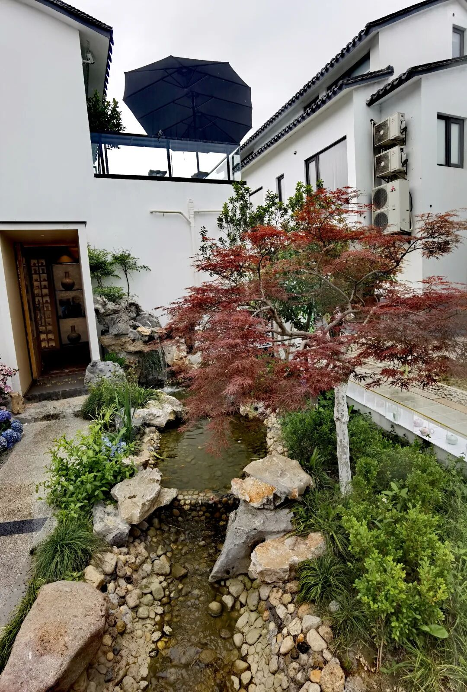
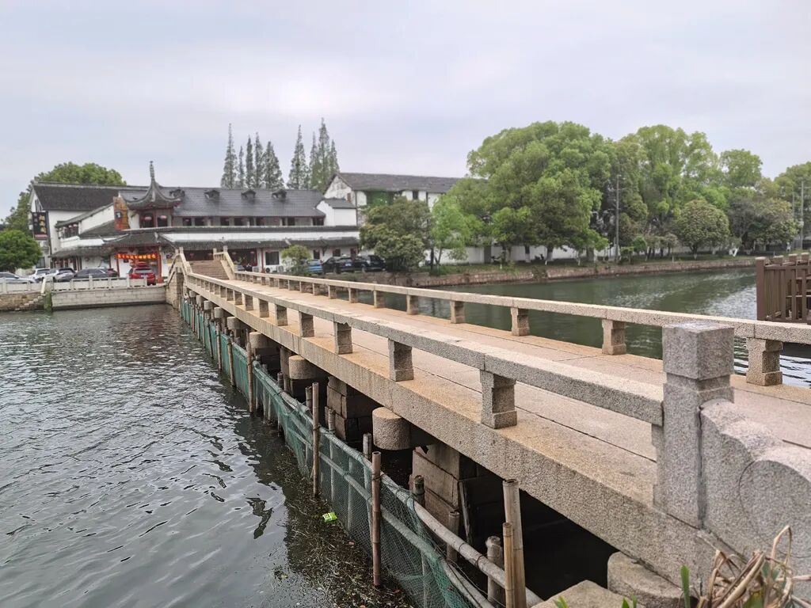
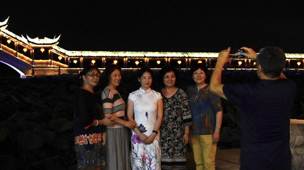

一、古村概况OVERVIEW
歇马桥在昆山市千灯镇石浦南郊、苏沪交界处，是昆山唯一的国家级传统村落——一条 500 米古石板街串起南宋抗金名将韩世忠的传说、红色抗战史和百年老屋里的新业态，被称为"古村 + 红学"。免费开放。
二、拍照机位PHOTO SPOTS
每个机位都配实拍图，所见即所得。歇马桥素材来自网络游记实拍，版权归原作者所有。
机位 1 · 水巷摇橹船 + 木栈桥（封面机位）
村中水巷：河道、手摇船、岸边木栈桥与白墙老屋一镜收进。船过桥洞时连拍，绿荫与睡莲作前景最出片。

机位 2 · 皮划艇水上运动（动感新玩法）
村南水面上有皮划艇俱乐部，彩色艇 + 老屋倒影 + 垂柳，适合拍活泼的团建/亲子照，与古镇静谧感形成反差。

机位 3 · 临水民居 + 藤蔓墙（文艺出片）
沿石板街走，临河一侧的木楼爬满藤蔓，倒影入水，有小船划过时按快门。适合人像与"江南慢生活"氛围照。

机位 4 · 网红店庭院（枯山水 + 红枫）
改造后的老屋庭院，白墙、卵石水景、红枫与遮阳伞构成小而精的日式庭院感，适合拍人像与静物。

机位 5 · 对印茶局（老街门面）
老街上的木构门面与白墙招牌，是"老屋里的新业态"代表构图，适合拍街景与打卡照。

机位 6 · 红色研学（周达明纪念馆）
木构老宅门面上悬挂"新四军淞沪抗日史迹陈列馆""周达明烈士纪念馆"牌匾，是"古村 + 红学"的标志画面。

三、美食打卡FOOD
歇马桥是昆山非遗"石浦白切羊肉"发祥地，古村里还藏着多家网红新业态。重点盯羊肉、苏帮菜与一家开在民国老建筑里的创意面馆。评分/人均取自腾讯地图、大众点评公开页面，会变动、以 App 实时为准。
一、古镇概况OVERVIEW
锦溪古镇，位于江苏省苏州市昆山市西南，地处江苏、浙江、上海三省市交界处，距周庄仅 8 公里、上海约 1 小时车程。它没有周庄、乌镇的喧嚣，是"活着的江南"——原住民还在河边洗衣、阿婆摇着蒲扇，商业味恰到好处。
二、拍照机位PHOTO SPOTS
每个机位都配实拍图，所见即所得。图片来自央广网记者及摄影师郁永龙（笔名苏龙）实拍，版权归原作者所有。
机位 1 · 古莲桥全景（封面机位）
站五保湖入口或湖岸侧面，把"廊桥 + 湖面倒影 + 莲池"一镜收进。桥洞与倒影恰好拼成满月，晨雾一起就是标准明信片。
机位 2 · 十眼桥（小宝带桥）—— 九墩十孔长龙卧波
十眼桥始建于南宋隆兴元年（1163），重建于清乾隆三十八年（1773），九墩十孔、全长 52 米，横架于坟塘港与五保湖口，俗称"小宝带桥"。站在桥的正侧位或远处，最能拍出"长龙卧波"、十孔映水的效果。中秋月夜，月光穿十孔洒湖面，形成"十孔映月"奇景。


机位 3 · 水巷摇橹船 / 廊窗框景
登古莲桥或桥畔，用廊窗作前景框住湖景；或坐手摇船从水上回望白墙石桥。傍晚 4–5 点光线最柔，穿旗袍或汉服拍人像氛围感拉满。

机位 4 · 水巷 / 临水民居（烟火气）
别只盯主街，钻进两侧窄巷，白墙水渍青苔、晾衣养花，人少极易出空镜大片；临河码头泊船、石阶直达水面满是生活气。
机位 5 · 碧波楼 / 临水楼阁
白墙黛瓦、飞檐翘角的临水楼阁与古镇融为一体，是拍建筑层次与倒影的好点位。

机位 6 · 夜景 / 蓝调时刻（镇区倒影）
亮灯后拍临水建筑倒影；天色靛蓝的"蓝调时刻"拍古桥飞檐剪影，鱼灯、孔明灯倒映湖心如"无数个月亮坠进湖心"。

机位 7 · 古莲桥夜景（廊桥亮灯）
古莲桥轮廓灯亮起后，廊桥如一条玉带横卧水面，倒影入古莲池，是当天收尾最好的一张。

三、美食打卡FOOD
锦溪午饭首选"奥灶面"——本地面馆密集、价格实在。以下店铺与评分取自大众点评公开页面及游客实拍攻略，会变动、以 App 实时为准。
必吃小吃与河鲜
必吃小吃：袜底酥（锦溪头号特产现烤才香）、奥灶面（红汤爆鱼面）、海棠糕 / 梅花糕、香酥鸡、臭豆腐、芡实糕、青团、水红菱
河鲜与家常菜：清蒸白水鱼、酱爆螺蛳 / 盐水虾、腌笃鲜、阿婆菜炒毛豆、桂花糕、酱猪蹄